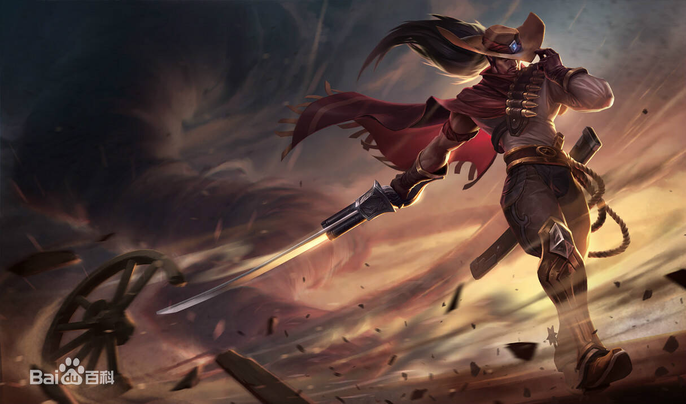

英雄背景
亚索是一个百折不屈的艾欧尼亚人，也是一名身手敏捷的御风剑客。这位生性自负的年轻人，被误认为杀害长老的凶手——由于无法证明自己的清白，他出于自卫而杀死了自己的哥哥。虽然长老死亡的真相已然大白，亚索还是无法原谅自己的所作所为。他在家园的土地上流浪，只有疾风指引着他的剑刃。
“死亡如风，常伴吾身。”~疾风剑豪
英雄属性
| 生命值 | 522(+87) |
| 生命回复/5秒 | 6.51(+0.9) |
| 移动速度 | 345 |
| 攻击范围 | 175 |
| 攻击力 | 60(+3.2) |
| 攻击速度 | 0.670(+2.5，1级时攻速加成4%) |
| 护甲 | 30(+3.2) |
| 魔法抗性 | 30(+1.25) |
英雄图片

使用技巧
自己使用
- 你可以将敌方小兵作为踏前斩的跳板，来追杀本已逃掉的敌人；你也可以直接突进到对方英雄身上，并将敌方小兵作为撤退时的跳板。
- 在18级时，亚索的斩钢闪只需要从装备中获取 55% 攻击速度，即可到达攻击速度上限。
- 狂风绝息斩可以对着任何被击飞的目标施放，即使这个击飞效果是你的友军造成的。
敌人使用
- 斩钢闪的范围非常狭窄。尽可能靠边，就能躲过这招。
- 当亚索的斩钢闪连续命中两次时，他的下次斩钢闪就会形成一道旋风。要观察他的增益栏，并且留心聆听相关音效，做好躲避这招的准备。
- 亚索在发出旋风之后最为虚弱，可以趁机逼他交战。
- 亚索的百折不屈的护盾只持续2秒。对他造成伤害即可将护盾触发。先等护盾消失，然后再开战。